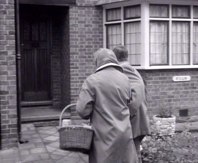
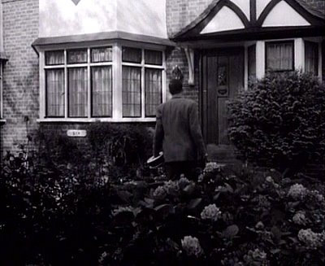
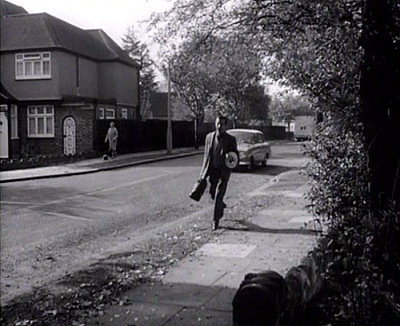
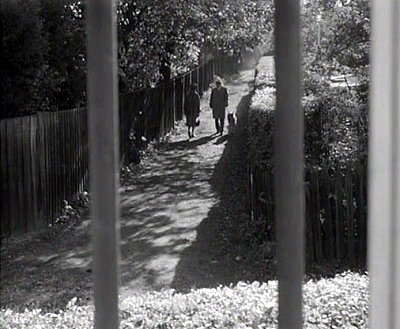
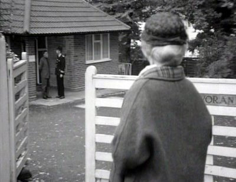
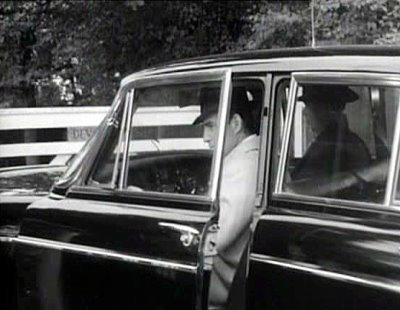
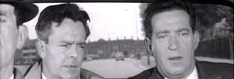
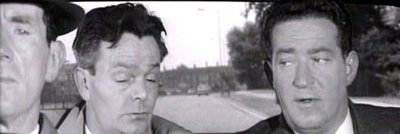
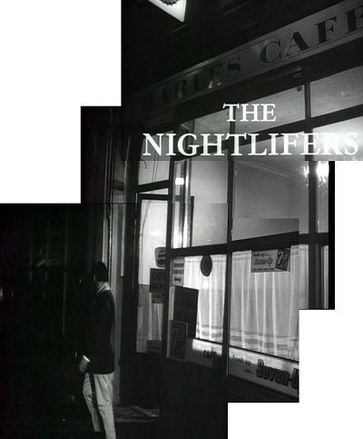
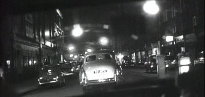

|
|
HELP FIND THE FOLLOWING LOCATIONS
PAGE 62
GIDEON'S
WAY: The Housekeeper (Leslie Norman: 1965)
R3: Totteridge Village, Totteridge – Electrician,
Ralph Maricut
(Harry Fowler) arrives at the home of Mr. Henderson (Devoran House, Lime Grove - redeveloped). to do some work and
finds
him dead in the bath. He runs to a neighbour’s house to use the
telephone.
Martha Smallwood (Kay Walsh) arrives back at the house later that day
to find
the police waiting.
(Identified by Geoff Dodd, January 2024)





R3: Totteridge Village, Totteridge –
(Identified by Geoff Dodd, January 2024)







Barnet
Way
- Leaving Apex Corner towards Borehamwood – It the back of a police car Detective
Superintendent Warr
is told to investigate the late Mr.
Henderson’s accounts by Commander George Gideon.
(Identified by
Ian
Rogers, March 2010)



White City
Stadium - Ralph
Maricut
is
picked up at the dog track by the police.
(Identified by
Ian
Rogers, March 2010)

GIDEON’S
WAY: The Nightlifers (John Moxey:
November 1964)
Unknown
1– Peter Sloan
(Anton Rogers), Sue Young (Annete
Andre), Tim Coles (Peter Fowlds)
and Tony King (James Hunter) cruse the area in a Bentley before Sue
Young gets
out to enter a late night cafe. After beating up the owners of the café
the
gang gets back into the car and are driven off. After the alarm is
raised by a
lorry driver, Keen drops in at the scene to investigate.


Cheyne Row, SW3 - Peter Sloan (Anton Rogers), Sue
Young (Annete
Andre), Tim Coles (Peter Fowlds)
and Alison Clifton
(Pauline Monroe) arrive at a Tim’s parent’s home (number 22) in Sloan’s
Bentley
to drop Tim off.
(Identified by Alan Field, May 2009)


Kings
Road,
SW3 crossing the junction with Old Church Street, heading west - Sloan decides
to beat up
Elspeth McCrae to teach her a lesson. Sloan’s
gang drive in the Bentley to find a phone box near her flat. They are
followed
by plane clothes policemen.
(Identified by Alan Field, March 2010)

Unknown 6 - Sloan decides to beat up Elspeth McCrae to teach her a lesson. Sloan’s gang drive in the Bentley to find a phone box near her flat. They are followed by plane clothes policemen in a Mini.


Unknown 8 - Elspeth McCrae’s (Jean Marsh) goes to the Black Crow Club as instructed. She is watched from a distance by Detective Chief Inspector David Keen (Alexander Davion).

Think you know a spot? Need a bigger image? Email me.
< Previous | Index | Avengerland | Next >
Copyright © 2024 Anthony R. McKay